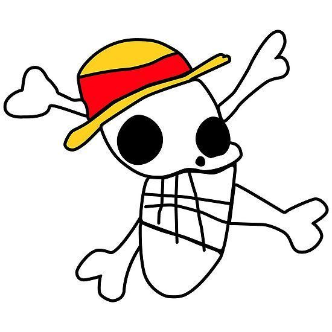
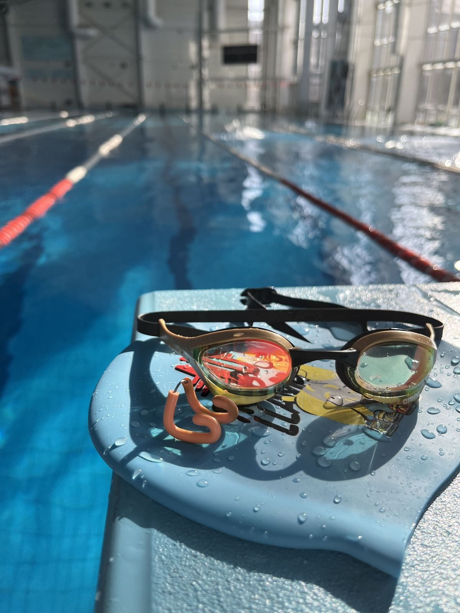
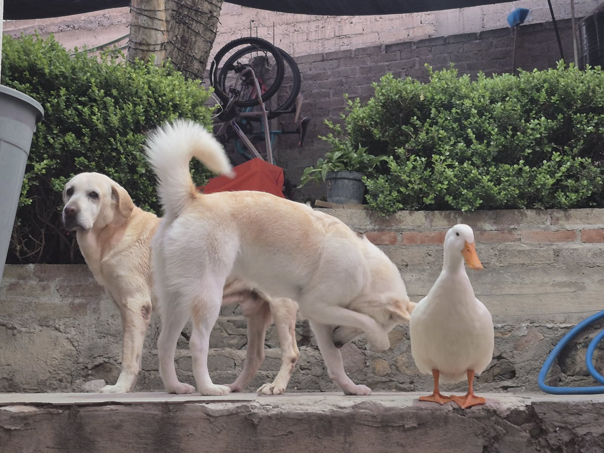

Estudiante de Ingeniería en Sistemas Computacionales · ESCOM
📧 Correo electrónico: carmonajuarezfatima@gmail.com
Sígueme en mis redes:
Lo que me gusta hacer en mi tiempo libre.


Alan Turing (1912–1954) fue un matemático británico considerado uno de los padres de la computación moderna. Durante la Segunda Guerra Mundial trabajó en Bletchley Park, el centro británico de criptoanálisis, donde lideró los esfuerzos para descifrar los mensajes cifrados con la máquina alemana Enigma.
Enigma era una máquina electromecánica con rotores que sustituía cada letra por otra distinta, cambiando la sustitución con cada tecla presionada. Esto producía un número enorme de configuraciones posibles, por lo que los alemanes la consideraban prácticamente indescifrable.
Turing diseñó, a partir de trabajo previo de criptógrafos polacos, una máquina llamada Bombe que automatizaba la búsqueda de las configuraciones diarias de Enigma. Gracias a ello los Aliados pudieron leer comunicaciones militares enemigas, y los historiadores estiman que esto acortó la guerra de manera significativa.
Además de su papel en la guerra, las ideas de Turing sobre computación sentaron las bases de la informática actual. Su historia muestra que la criptografía y el criptoanálisis han sido decisivos para la seguridad de la información, algo que hoy usamos a diario con algoritmos como RSA.
Fuentes: [agrega aquí las referencias que consultaste]